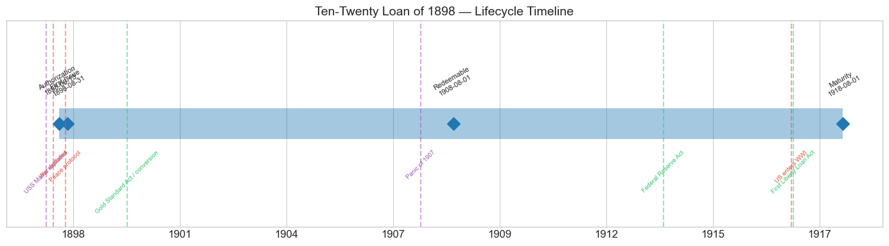
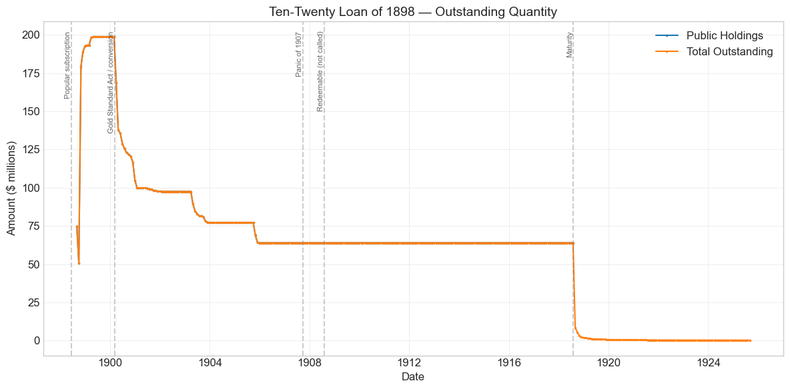
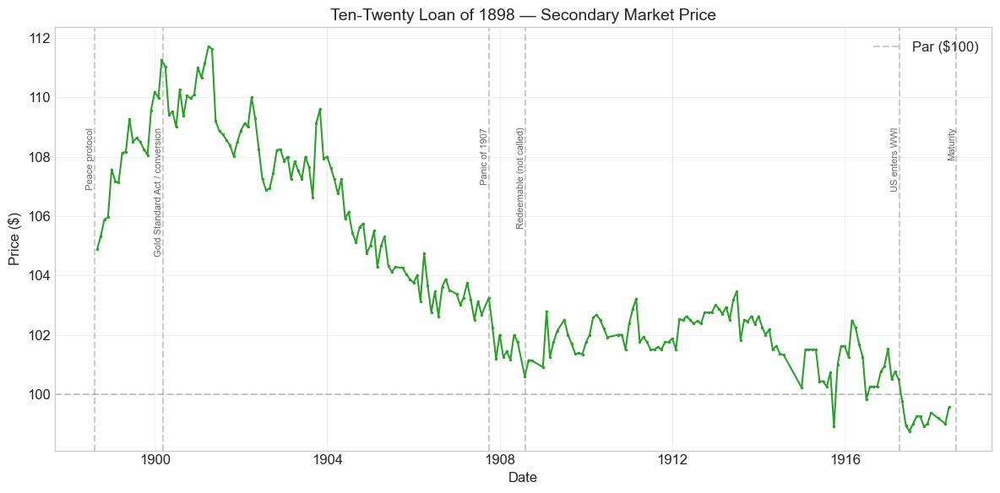
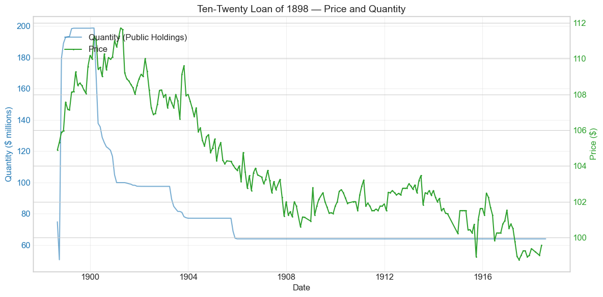
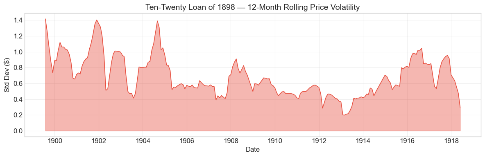

Bond Biography: Ten-Twenty Loan of 1898#
The War Loan the People Bought#
An enhanced chapter from the Hall-Payne-Sargent US Federal Bond Database (2,857 issues, 1776–1960)
Bond ID (L1): 20130 | Category: Interest Bearing > Marketable > Long Term Bond
import pandas as pd
import numpy as np
import matplotlib.pyplot as plt
import matplotlib.patches as mpatches
import datetime
import warnings
warnings.filterwarnings('ignore')
plt.style.use('seaborn-v0_8-whitegrid')
plt.rcParams.update({'figure.figsize': (12, 6), 'font.size': 12,
'axes.titlesize': 14, 'axes.labelsize': 12})
# Load the bond database
store = pd.HDFStore('../data/BondDF.h5', mode='r')
BondList = store['BondList']
BondQuant = store['BondQuant']
BondPrice = store['BondPrice']
store.close()
BondQuant_T = BondQuant.transpose()
BondPrice_T = BondPrice.transpose()
bond_id = 20130
print(f'Loaded data for: Ten-Twenty Loan of 1898 (ID: 20130)')
/Users/thomassargent/anaconda3/lib/python3.9/site-packages/pandas/core/arrays/masked.py:60: UserWarning: Pandas requires version '1.3.6' or newer of 'bottleneck' (version '1.3.5' currently installed).
from pandas.core import (
Loaded data for: Ten-Twenty Loan of 1898 (ID: 20130)
Overview: A Popular Loan for a Popular War#
The Ten-Twenty Loan of 1898 — the 3 percent “war loan” of the Spanish-American War — was authorized by the War Revenue Act of June 13, 1898 and first issued on August 31, 1898, redeemable at the government’s option after ten years (August 1, 1908) and payable in twenty (August 1, 1918). It was, in every sense that mattered, the mirror image of the bond that precedes it in this database. Three years earlier, in the desperate winter of 1895, the Treasury had sold its 4 percent thirty-year bonds by private contract to the Belmont–Morgan syndicate, at a price the syndicate promptly bettered by eight points in the open market — an episode that convinced a large part of the country that the government’s credit had become a Wall Street franchise (see the companion chapter on the Loan of 1925, Bond 20129). When war with Spain came in April 1898, the McKinley administration and Congress were determined that the war loan would carry the opposite signature. The act directed that the bonds be sold at par, by popular subscription, and — in a provision Congress wrote directly into the statute — that small subscribers be served first: individual subscriptions of $500 or less were to be allotted in full before any larger subscription received a dollar.
The result exceeded every expectation. When Secretary of the Treasury Lyman J. Gage opened the books in mid-June 1898 for $200 million of 3 percent bonds, subscriptions poured in from every state — reportedly well over 300,000 of them, totaling roughly $1.4 billion against the $200 million offered, an oversubscription of some seven times. The loan is often called the first mass-subscription war loan in American history, and it is the direct ancestor of the Liberty Loans of 1917–18: the demonstration that the government could borrow from its own citizens, in small denominations, at a coupon lower than any war loan the United States had ever floated. That 3 percent coupon — for a nation at war — was itself a monument to the restored confidence in gold after McKinley’s victory over Bryan in 1896, reinforced by the bonds’ eligibility as security for national bank note circulation.
The bond’s later life was quieter but no less telling. Roughly two-thirds of the issue was eventually tendered for exchange into the 2 percent Consols of 1930 under the Gold Standard Act of 1900 (told from the receiving side in the companion chapter on Bond 20131); the untendered remainder — about $64 million — slept in portfolios for a dozen years and was paid off at maturity on August 1, 1918, in the middle of another, vastly larger war whose loans were built on this one’s model. During its lifetime on the secondary market the bond’s average price was $104.11, ranging from $98.75 to $111.71 (223 monthly observations, August 1898 to May 1918); peak outstanding reached $198.79 million on January 31, 1900.
Historical Context: A Short War and a Long Shadow#
The following major events framed this bond’s lifetime:
Date |
Event |
Category |
|---|---|---|
1898-02-15 |
USS Maine explodes in Havana harbor |
Crisis |
1898-04-25 to 1898-08-12 |
Spanish-American War |
War |
1898-06-13 |
War Revenue Act; $200M popular loan authorized |
Legislation |
1898-08-12 |
Peace protocol signed with Spain |
War |
1900-03-14 |
Gold Standard Act; conversion into 2% Consols begins |
Legislation |
1907-10 to 1908-02 |
Panic of 1907 |
Crisis |
1908-08-01 |
Bonds become redeemable at government’s option |
Fiscal |
1913-12-23 |
Federal Reserve Act |
Legislation |
1917-04-06 to 1918-11-11 |
World War I (US participation) |
War |
1917-04-24 |
First Liberty Loan Act |
Legislation |
1918-08-01 |
Maturity; loan paid off |
Fiscal |
The fiscal picture of a “splendid little war”#
The war with Spain was, by the standards of American wars, brief and cheap: declared in late April 1898, effectively over with the peace protocol of August 12, formally ended by the Treaty of Paris in December. But it arrived at an awkward fiscal moment. The Treasury had run deficits through most of the depression years after 1893, and the gold reserve — though rebuilt since the crisis of 1895–96 — was a fresh memory. Congress answered with the War Revenue Act of June 13, 1898, a genuinely two-handed measure: on the tax side, sharply increased excises on beer and tobacco, a broad schedule of documentary and proprietary stamp taxes, and a federal legacy (inheritance) tax; on the loan side, authority for up to $400 million of 3 percent ten-twenty bonds (of which $200 million was offered), plus $100 million of short-term certificates of indebtedness. The war’s direct cost — a few hundred million dollars — was thus split between current taxation and a single bond issue, a conservative structure that stands in deliberate contrast to the Civil War’s flood of paper and to the borrowing that would follow in 1917.
Why a popular loan?#
The statute’s marketing provisions were politics as much as finance. The Belmont–Morgan contract of February 1895 was barely three years old, congressional investigation of it more recent still, and Bryan’s free-silver Democracy — beaten in 1896 but very much alive — stood ready to portray any syndicate sale as a second surrender to Wall Street. Congress therefore wrote the distribution plan into the law itself: the bonds were to be offered at par to the public, and allotments were to give absolute preference to small subscribers, with individual subscriptions of $500 or less filled in full before larger ones received anything. Bonds were issued in denominations as small as $20, and payment could be made in installments. The 1896 popular loan had proven the machinery would work (see Bond 20129); the 1898 act made democratic distribution mandatory. The subscription, opened in mid-June and closed in mid-July 1898, was a spectacular success — roughly $1.4 billion subscribed for $200 million of bonds — and the entire issue is generally understood to have been absorbed by small and mid-sized subscribers and banks, with no underwriting syndicate anywhere in the chain.
Why 3 percent?#
A 3 percent twenty-year coupon, sold at par in wartime, would have been unthinkable in 1895, when the Treasury had to pay the syndicate an effective 3¾ percent in peacetime merely to defend the gold reserve. Three things had changed. First, the money question was settled in practice: McKinley’s victory in 1896 (confirmed in 1900) had extinguished the silver-payment risk that had haunted every long “coin” bond of the mid-1890s. Second, gold was abundant — new supplies from South Africa, Australia, and the Klondike were reflating the world price level and pushing yields on gilt-edged paper down everywhere. Third, the bonds carried the circulation privilege: national banks could deposit them as security for note issue, which gave the paper a captive institutional demand beyond its investment merits. The market ratified the terms immediately — our price series opens in August 1898 at $104.89, a near five-point premium over the par subscription price within weeks of issue.
The quiet decades#
After the war the bond’s history is one of successive subtractions. The Gold Standard Act of March 14, 1900 invited holders of the 3s of 1908–1918 (along with the 5s of 1904 and 4s of 1907) to exchange them for the new 2 percent gold Consols of 1930 on terms that compensated tendering holders for their bonds’ market premium — and gave the new 2s a decisively better circulation-privilege deal (a ½ percent tax on circulation against 1 percent for the old bonds). Roughly half the issue went in the first year, and further tranches followed through 1905, leaving about $64 million untendered. The Panic of 1907 left only a shallow mark — a dip from about $103 to $101 — on a bond by then held mostly in bank vaults. The government chose not to call the bonds when they became redeemable in August 1908 (the Treasury, in deficit after the panic, had no surplus to spend retiring a 3 percent obligation), so the remnant ran on to its August 1, 1918 maturity — by which point the Liberty Loans, lineal descendants of the 1898 subscription, had made a 3 percent coupon look quaint, and the bond spent its final year quoted just below par before being paid off at 100 in the midst of the greater war.
# Bond Lifecycle Timeline
fig, ax = plt.subplots(figsize=(14, 4))
# Key dates
dates = [('Authorization', '1898-06-13'), ('First Issue', '1898-08-31'), ('Redeemable', '1908-08-01'), ('Maturity', '1918-08-01')]
events = [('USS Maine explodes', '1898-02-15', 'crisis'), ('War declared', '1898-04-25', 'war'), ('Peace protocol', '1898-08-12', 'war'), ('Gold Standard Act / conversion', '1900-03-14', 'legislation'), ('Panic of 1907', '1907-10-01', 'crisis'), ('Federal Reserve Act', '1913-12-23', 'legislation'), ('US enters WWI', '1917-04-06', 'war'), ('First Liberty Loan Act', '1917-04-24', 'legislation')]
import matplotlib.dates as mdates
from datetime import datetime
# Plot bond lifetime bar
d0 = datetime.strptime(dates[0][1], '%Y-%m-%d')
d1 = datetime.strptime(dates[-1][1], '%Y-%m-%d')
ax.barh(0, (d1 - d0).days, left=mdates.date2num(d0), height=0.3,
color='#1f77b4', alpha=0.4, label='Bond Lifetime')
# Mark key dates
for label, date_str in dates:
d = datetime.strptime(date_str, '%Y-%m-%d')
ax.plot(mdates.date2num(d), 0, 'D', color='#1f77b4', markersize=10)
ax.annotate(f'{label}\n{date_str}', (mdates.date2num(d), 0.25),
ha='center', va='bottom', fontsize=8, rotation=30)
# Mark historical events
colors = {'war': '#e74c3c', 'crisis': '#9b59b6', 'legislation': '#2ecc71', 'other': '#95a5a6', 'monetary': '#f39c12'}
for name, date_str, cat in events:
d = datetime.strptime(date_str, '%Y-%m-%d')
ax.axvline(mdates.date2num(d), color=colors.get(cat, 'gray'), alpha=0.5, linestyle='--')
ax.annotate(name, (mdates.date2num(d), -0.25), ha='center', va='top',
fontsize=7, rotation=45, color=colors.get(cat, 'gray'))
ax.set_yticks([])
ax.xaxis.set_major_formatter(mdates.DateFormatter('%Y'))
ax.set_title('Ten-Twenty Loan of 1898 — Lifecycle Timeline')
ax.set_ylim(-1, 1)
plt.tight_layout()
plt.show()

Bond Features#
Feature |
Detail |
|---|---|
Name |
Ten-Twenty Loan of 1898 (the “3s of 1908–1918”) |
Authorizing Act |
War Revenue Act of June 13, 1898 |
First Issue Date |
August 31, 1898 (subscription June–July 1898) |
Term |
Redeemable after ten years (August 1, 1908, at the government’s option); payable in twenty (August 1, 1918) |
Coupon Rate |
3.0% |
Payment Frequency |
Quarterly (February, May, August, November) |
Callable |
Yes — after August 1, 1908 |
Payable in Coin |
Yes |
Amount Offered |
$200 million (of $400 million authorized), sold at par |
Distribution |
Popular subscription; individual subscriptions of $500 or less allotted in full first |
Denominations |
As small as $20 |
Peak Outstanding |
$198.79 million (January 31, 1900) |
Special Privilege |
Eligible as security for national bank note circulation (pre-1900 terms: 1% circulation tax) |
Two features shaped everything that followed. The ten-twenty structure — callable at ten years, due at twenty — was an old ante-bellum form (the famous “five-twenties” of the Civil War were its ancestors) that gave the Treasury an option it would, in the event, decline to exercise: the bonds were never called, and ran to their full 1918 maturity. And the statutory small-subscriber preference made this the only bond in the database whose distribution method was itself a piece of legislation — Congress did not merely permit a popular loan, it required one.
# Display full bond features from database
row = BondList.loc[20130]
display_cols = [
"Treasury's Name Of Issue", 'Authorizing Act', 'Term Of Loan',
'First Issue Date', 'First Redemption Date', 'Final Redemption Date',
'Coupon Rate', 'Coupons Per Year', 'Callable', 'Coin',
'Authorized Amount', 'Price Sold'
]
print('Bond Features from Database:')
print('=' * 55)
for col in display_cols:
if col in row.index:
print(f' {col:<30} {row[col]}')
Bond Features from Database:
=======================================================
Treasury's Name Of Issue Ten-Twenty Loan of 1898
Authorizing Act June 13, 1898
Term Of Loan 10 years
First Issue Date 1898-08-31 00:00:00
First Redemption Date NaT
Final Redemption Date NaT
Coupon Rate 3.0
Coupons Per Year 4.0
Callable 1.0
Coin 1.0
Authorized Amount nan
Price Sold 1.0
Bond Quantity Over Time#
The bond’s outstanding quantity peaked at $198.79 million on January 31, 1900 — essentially the full $200 million offered. The quantity series then records, in clean steps, the whole later biography of the issue: the conversions into the 2 percent Consols of 1930 after March 1900, the frozen $64 million plateau of 1906–1918, and the payoff at the August 1918 maturity. Data span August 1898 to August 1925 (the long post-1918 tail is the residue of bonds not yet presented for redemption).
# Bond quantity over time
fig, ax = plt.subplots(figsize=(12, 6))
for stype in ['Public Holdings', 'Total Outstanding']:
try:
s = BondQuant_T.loc[(20130, stype)]
s = s[s.notna()]
if len(s) > 0:
ax.plot(s.index, s.values / 1e6, marker='.', markersize=3, linewidth=1.5, label=stype)
except KeyError:
pass
ax.set_title('Ten-Twenty Loan of 1898 — Outstanding Quantity')
ax.set_xlabel('Date')
ax.set_ylabel('Amount ($ millions)')
ax.legend()
ax.grid(True, alpha=0.3)
events = {'1898-06-13': 'Popular subscription', '1900-03-14': 'Gold Standard Act / conversion', '1907-10-01': 'Panic of 1907', '1908-08-01': 'Redeemable (not called)', '1918-08-01': 'Maturity'}
for date_str, label in events.items():
d = pd.Timestamp(date_str)
ax.axvline(d, color='gray', alpha=0.4, linestyle='--')
ax.text(d, ax.get_ylim()[1]*0.97, label, rotation=90, va='top', ha='right', fontsize=8, alpha=0.7)
plt.tight_layout()
plt.show()

Quantity Analysis: Subscription, Conversion, Plateau, Payoff#
The quantity series divides into four legible movements, each — as with the other bonds of this era — a deliberate act of the Treasury or of its bondholders rather than a market accident.
The subscription installments, August 1898 – early 1900. The series opens in August 1898 at $74.8 million, dips to $50.6 million in September, then leaps to $179.4 million in October and climbs gradually to its peak of $198.79 million in January 1900. The broad shape is the subscription paying in: allotments had gone out to hundreds of thousands of subscribers, many paying by installment, and bonds were issued as payments completed. The odd September dip and October surge are almost certainly artifacts of how the Treasury’s ledgers recorded the installment process — receipts, deliveries, and reclassifications settling into their final accounts — rather than any true retirement and reissue of $130 million of bonds in sixty days; the auto-detected “events” of 1898-09 and 1898-10 (below) should be read accordingly.
The conversions of 1900–1905. The Gold Standard Act of March 14, 1900 opened the exchange into 2 percent Consols of 1930, and the response was immediate: outstanding fell 15 percent in March 1900 and 18 percent more in April, with a further 10 percent step in December — from $198.8 million to roughly $99.6 million by mid-1901. Half the issue, in other words, was tendered within about a year. Further, smaller waves of exchange followed as the refunding remained open — visible steps in the spring of 1903 (to $83 million) and the autumn of 1905 (to $64 million). The pattern identifies the tendering constituency: national banks, for whom the new 2s carried a half-percent circulation tax against 1 percent on the 3s, and who received compensation for the 3s’ market premium in the exchange terms. Holders without circulation to secure — savings institutions, trustees, and the small subscribers of 1898 — kept a 3 percent bond in preference to a 2, and theirs is the remnant that stayed.
The plateau, 1906–1918. From late 1905 the outstanding stock froze at $63.95 million and did not move for twelve and a half years — through the Panic of 1907, through the August 1908 redeemable date (the Treasury, its surplus gone after the panic, never exercised the call), and through the outbreak of the World War. A bond whose holders had already self-selected as the ones who did not want to exchange it was, unsurprisingly, a bond nobody retired.
The payoff, August 1918. At the August 1, 1918 maturity the stock collapsed — down 87 percent in the month itself, with the balance melting away over the following year as holders presented their bonds. The long, thin tail visible through 1925 — a few hundred thousand dollars, shrinking by tiny amounts each month — is simply matured bonds not yet presented for payment, the routine residue of an issue that had once had several hundred thousand separate owners, some of whom had doubtless mislaid a $20 bond bought in the patriotic summer of 1898.
Secondary Market Prices#
Overall Statistics (1898-08-31 to 1918-05-31): Mean $104.11, Range $98.75–$111.71, Std Dev $3.34, 223 observations.
By Period:
Period |
Mean |
Std |
Min |
Max |
Obs |
|---|---|---|---|---|---|
War premium and ascent (1898-08 to 1900-03) |
$108.17 |
$1.78 |
$104.89 |
$111.25 |
20 |
Post-conversion era (1900-04 to 1907-12) |
$106.52 |
$2.67 |
$101.19 |
$111.71 |
90 |
Redeemable era (1908-01 to 1914-07) |
$102.06 |
$0.61 |
$100.59 |
$103.46 |
73 |
War and pull to par (1914-08 to 1918-05) |
$100.39 |
$1.05 |
$98.75 |
$102.48 |
40 |
Full life |
$104.11 |
$3.34 |
$98.75 |
$111.71 |
223 |
The chart below is best read as three statements. First, the immediate premium: bonds sold to the public at par in July 1898 stood at nearly $105 by the end of August and climbed steadily to a peak of $111.71 in March 1901 — the gilded-age bond market’s verdict that a 3 percent gold-era coupon with the circulation privilege had been offered cheap, and the small subscribers’ instant reward for their patriotism. Second, the long, gentle amortization: after 1901 the bond’s price is mostly arithmetic, a premium melting toward par — but with a twist unique among its contemporaries, because a callable ten-twenty bond had two possible horizons. Before 1908 the market had to weigh the chance of a call at the ten-year date; once August 1908 passed without a call, the bond became in effect a simple 1918 obligation, and the price settled onto a remarkably tight glide path (a standard deviation of only $0.61 over 1908–1914). Third, the shocks are shallow: the Panic of 1907 shaved perhaps two points (to $101.19 in November 1907), and the arrival of the Liberty Loans in 1917 — offering 3½ percent and then more — pushed the old 3s just below par ($98.75 in June 1917) in their final year. A bond born in a war ended its life repriced by a bigger one.
# Annotated price chart
fig, ax = plt.subplots(figsize=(12, 6))
s = BondPrice_T.loc[(20130, 'Average')]
s = pd.to_numeric(s, errors='coerce').dropna()
if len(s) > 0:
ax.plot(s.index, s.values, marker='.', markersize=3, linewidth=1.5, color='#2ca02c')
ax.axhline(100, color='black', alpha=0.2, linestyle='--', label='Par ($100)')
ax.set_title('Ten-Twenty Loan of 1898 — Secondary Market Price')
ax.set_xlabel('Date')
ax.set_ylabel('Price ($)')
ax.legend()
ax.grid(True, alpha=0.3)
events = {'1898-08-12': 'Peace protocol', '1900-03-14': 'Gold Standard Act / conversion', '1907-10-01': 'Panic of 1907', '1908-08-01': 'Redeemable (not called)', '1917-04-06': 'US enters WWI', '1918-08-01': 'Maturity'}
for date_str, label in events.items():
d = pd.Timestamp(date_str)
ax.axvline(d, color='gray', alpha=0.4, linestyle='--')
ax.text(d, ax.get_ylim()[1]*0.97, label, rotation=90, va='top', ha='right', fontsize=8, alpha=0.7)
plt.tight_layout()
plt.show()

# Price and Quantity — dual-axis chart
fig, ax1 = plt.subplots(figsize=(12, 6))
# Quantity (left axis)
for stype in ['Public Holdings', 'Total Outstanding']:
try:
q = BondQuant_T.loc[(20130, stype)]
q = q[q.notna()]
if len(q) > 0:
ax1.plot(q.index, q.values / 1e6, color='#1f77b4', alpha=0.6, label=f'Quantity ({stype})')
break
except KeyError:
pass
ax1.set_xlabel('Date')
ax1.set_ylabel('Quantity ($ millions)', color='#1f77b4')
ax1.tick_params(axis='y', labelcolor='#1f77b4')
# Price (right axis)
ax2 = ax1.twinx()
p = BondPrice_T.loc[(20130, 'Average')]
p = pd.to_numeric(p, errors='coerce').dropna()
if len(p) > 0:
ax2.plot(p.index, p.values, color='#2ca02c', marker='.', markersize=2, label='Price')
ax2.set_ylabel('Price ($)', color='#2ca02c')
ax2.tick_params(axis='y', labelcolor='#2ca02c')
ax1.set_title('Ten-Twenty Loan of 1898 — Price and Quantity')
ax1.grid(True, alpha=0.3)
fig.legend(loc='upper left', bbox_to_anchor=(0.1, 0.9))
plt.tight_layout()
plt.show()

Detected Price/Quantity Events, Explained#
The following significant movements were auto-detected in the data:
Date |
Type |
Change |
Explanation |
|---|---|---|---|
1898-09 |
Quantity decrease |
−32.4% |
Almost certainly an accounting artifact of the installment-payment process, not a retirement. The $200 million subscription of June–July 1898 was paid in by hundreds of thousands of subscribers, many in installments, and the Treasury’s ledgers in these first months reflect receipts, deliveries, and reclassifications settling into place. No historical event corresponds to a genuine one-third retirement of a brand-new war loan in September 1898 — the war was already over (peace protocol, August 12) and the Treasury was flush with subscription money. |
1898-10 |
Quantity increase |
+254.8% |
The mirror image of the September entry: the bulk delivery of bonds as subscription installments completed. Outstanding jumps from $50.6M to $179.4M and then climbs steadily to the $198.8M peak by January 1900 as the last installments and allotments settle. Read together, the two “events” are one process — the popular loan paying in. |
The larger interpretive point matches what we find across this era of the database: the dramatic quantity movements of this bond’s life — the 1898 issuance, the conversions of 1900–1905, and the 1918 payoff — are all administrative acts of debt management, executed on statutory schedules. The era’s crises (1907) and wars (1917–18) appear only in the price, and even there in single digits. Between the free-silver scare of 1896 and the inflation of 1917, holders of United States bonds simply had very little to fear.
Price Volatility#
Maximum drawdown: −11.6% (from the peak of $111.71 on March 31, 1901 to the trough of $98.75 on June 30, 1917)
Average monthly return: −0.021%
As with every premium bond of fixed horizon in this database, the headline drawdown is mostly destiny rather than disaster: a bond redeemable at $100 in 1918 that trades near $112 in 1901 must shed those twelve points over the intervening seventeen years even if nothing whatever goes wrong. The premium was the capitalized value of an above-market coupon plus the circulation privilege, and it amortized on schedule; the small negative average monthly return is that amortization, spread over two decades.
The rolling-volatility chart isolates the episodes that were genuinely eventful. Volatility is modestly elevated in the bond’s youth (1898–1901), when the war premium was building and the 1900 conversion was re-sorting the ownership of the issue; it flickers in the money-market stringency of the Panic of 1907; and it is astonishingly low from 1908 to 1914 — the quietest stretch of this bond’s life and among the quietest in the database, a 3 percent bond with a settled currency, a fixed horizon, and holders who never traded. The final ripple in 1915–1917 is the World War repricing, when rising market yields and then the Liberty Loans pulled the last of the premium out of the price and briefly pushed it below par. Where the month-to-month wiggles of the later years exceed what any news can explain, thin trading in an issue long immobilized in strongboxes — and the vagaries of sparse quotations — are the likelier culprits.
# Rolling volatility (12-month window)
p = BondPrice_T.loc[(20130, 'Average')]
p = pd.to_numeric(p, errors='coerce').dropna()
if len(p) >= 12:
rolling_std = p.rolling(window=12).std().dropna()
fig, ax = plt.subplots(figsize=(12, 4))
ax.fill_between(rolling_std.index, rolling_std.values, alpha=0.4, color='#e74c3c')
ax.plot(rolling_std.index, rolling_std.values, color='#e74c3c', linewidth=1)
ax.set_title('Ten-Twenty Loan of 1898 — 12-Month Rolling Price Volatility')
ax.set_xlabel('Date')
ax.set_ylabel('Std Dev ($)')
ax.grid(True, alpha=0.3)
plt.tight_layout()
plt.show()
else:
print('Insufficient data for rolling volatility (need >= 12 observations)')

Issuance, Distribution, and Redemption#
The subscription of June–July 1898. The bonds were sold at par — no syndicate, no discount, no underwriting fee — by nationwide public subscription conducted directly by the Treasury under Secretary Lyman J. Gage. The offering was advertised across the country; subscriptions could be entered at post offices, banks, and by mail; bonds were available in coupon and registered form, in denominations as small as $20; and payment could be spread in installments. The statute’s allotment rule did the rest: individual subscriptions of $500 or less were filled in full, first, before any larger subscription received an allotment. When the books closed in mid-July the Treasury had received subscriptions reportedly exceeding $1.4 billion — roughly seven times the $200 million offered — from well over 300,000 subscribers. Under the allotment rule, the small subscriptions absorbed so much of the issue that large subscribers received little or nothing; contemporaries noted, with satisfaction or irony according to taste, that the great financial houses that had been indispensable in 1895 were this time largely shut out. The oversubscription served both purposes for which it was designed: it raised the war fund cheaply, and it demonstrated — three months before the midterm elections — that the people, not the syndicates, now financed the government.
Who held it, and how that changed. The initial distribution was thus the widest of any American security to that date. But ownership migrated, as it always does. The bonds’ circulation privilege drew them into national bank portfolios in quantity, and it was precisely these bank-held bonds that answered the Gold Standard Act’s invitation in 1900: tendering holders exchanged their 3s for 2 percent Consols of 1930 on terms that compensated them for the 3s’ premium, and came away with a bond whose circulation tax was half as heavy and whose life ran to 1930 (the receiving side of this transaction is told in the Consols chapter, Bond 20131). By the successive exchange waves of 1900–1905 roughly two-thirds of the issue — about $135 million of the $198.8 million peak — had been transformed into consols. What stayed behind, about $64 million, was the paper of holders for whom the circulation privilege meant nothing and the extra 1 percent of coupon meant everything: the durable remnant of the popular subscription.
Redemption. The government’s ten-year call option came and went unexercised in August 1908 — the Treasury, running deficits in the aftermath of the Panic of 1907, had no fiscal reason to retire a 3 percent obligation early — and the remnant ran to maturity on August 1, 1918. It was paid off at par, in cash, by a wartime Treasury then borrowing billions through the Liberty Loans; the $64 million payoff was a rounding error inside the Second Liberty Loan’s accounts. The quantity data show the stock collapsing 87 percent in the maturity month and melting to under $1 million within a year; the faint residue that trails through 1925 is matured bonds never presented — some of them, surely, $20 souvenirs of 1898 kept in bureau drawers. The price series ends in May 1918 at $99.56, a matured-bond quote a shade under par that reflects quotation conventions and the few weeks’ discount to the payoff date rather than any doubt about payment.
Implications and Legacy#
The invention of the mass war loan. The Ten-Twenty Loan of 1898 is the hinge between two eras of American war finance. Behind it lay the Civil War precedent of Jay Cooke’s five-twenty campaigns — popular in method but run by a private agent for a commission — and the syndicate finance of 1895. Ahead of it lay the Liberty Loans. When the United States entered the World War in April 1917, the machinery it reached for — sale at par by nationwide subscription, small denominations, installment payment, patriotic appeal, preference for the small subscriber — was the machinery of 1898, scaled up a hundredfold. The 1898 loan proved the essential propositions: that the broad public would oversubscribe a government loan many times over, that democratic distribution was compatible with a lower coupon rather than a higher one, and that a debt widely held is a debt widely defended. Every American war loan since has been, in design, a descendant of the summer of 1898.
The political answer to 1895. Read beside the Loan of 1925 (Bond 20129), this bond completes an argument. In February 1895 the Treasury had sold its credit through Morgan at 104½ and watched the syndicate resell at 112¼; in June 1898 Congress ordered the credit sold to the people at par, and the people bid it to 105 within weeks — capturing for themselves the premium that in 1895 had gone to the underwriters. The comparison was drawn loudly at the time, and it was not entirely fair — 1895 was a desperate defense of the gold reserve in a hostile market, 1898 a popular war in a confident one — but the lesson legislators took from the pair was permanent: given transparent terms and settled money, the United States needed no intermediary between itself and its citizens.
A yield-curve milestone. The 3 percent coupon, sold at par and immediately at a premium, marked the lowest rate at which the United States had ever floated a long war loan, and it dates precisely the restoration of American credit after the free-silver decade: 5 percent in 1894, 4 in 1895, 3 in 1898, 2 (with the circulation privilege doing heavy lifting) in 1900. For students of the gold standard, the loan’s effortless placement in 1898 — two years after a presidential election fought over the monetary standard — is as clean a measure as exists of how completely the 1896 verdict, soon ratified by the Gold Standard Act, had removed devaluation risk from the dollar.
An honest, unremarkable ledger — which was the point. The bond’s own record was spotless: eighty quarterly coupons paid in gold-standard dollars, two-thirds of the principal transformed by voluntary exchange into the consols of 1900, the rest paid at par on the appointed day in 1918, through one panic and into a world war. Its price never rose fifteen points nor fell two below par. For the several hundred thousand households who bought a government bond in 1898 — many for the first time — that uneventfulness was the whole product: the United States had become a country whose war loans were safe enough to be dull. Nineteen years later, five million, then ten million, then twenty million subscribers would act on the demonstration.
References#
Primary Sources#
War Revenue Act of June 13, 1898 (30 Stat. 448) — the war taxes, the $400 million bond authority, the $200 million 3 percent ten-twenty loan, and the statutory preference for subscriptions of $500 or less.
Gold Standard Act of March 14, 1900 (31 Stat. 45) — the refunding of the 3s of 1908–1918 (with the 5s of 1904 and 4s of 1907) into the 2 percent Consols of 1930.
Annual Reports of the Secretary of the Treasury, 1898–1900 (Lyman J. Gage, on the conduct of the popular subscription and the refunding) and 1918 (on the payment of the loan at maturity).
Scholarly Works#
Noyes, A. D. (1909). Forty Years of American Finance. New York: G. P. Putnam’s Sons. (The classic contemporary narrative of the 1898 loan and the post-1896 restoration of confidence.)
Friedman, M. & Schwartz, A. J. (1963). A Monetary History of the United States, 1867–1960. Princeton: Princeton University Press. (Ch. 3–4 on the end of the free-silver era and the gold inflows after 1896.)
Homer, S. & Sylla, R. (2005). A History of Interest Rates, 4th ed. Hoboken: Wiley.
Payne, J., Szoke, B., Hall, G. & Sargent, T. (2025). “Costs of Financing US Federal Debt Under a Gold Standard: 1791–1933.” Quarterly Journal of Economics.
General Histories#
Dewey, D. R. (1918). Financial History of the United States. New York: Longmans, Green and Co. (Ch. on the Spanish-American War revenue and loan legislation.)
Studenski, P. & Krooss, H. E. (1952). Financial History of the United States. New York: McGraw-Hill.
Enhanced Bond Biography generated from the Hall-Payne-Sargent Bond Database. Narrative enrichment draws principally on Noyes (1909), Dewey (1918), Studenski & Krooss (1952), and the Annual Reports of the Secretary of the Treasury.